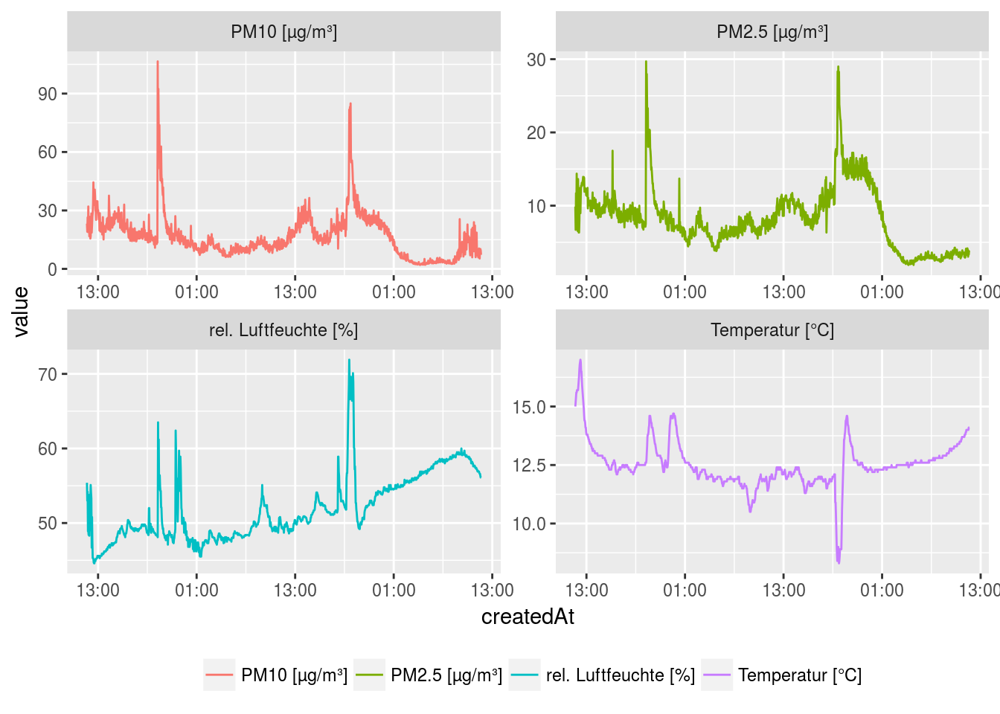

Installation
if(!require("devtools"))
install.packages("devtools")
devtools::install_github("JohannesFriedrich/senseBox@master")Usage
Get some information about the senseBox project and list all senseBoxIds
library(senseBox)
## Loading required package: httr
stats <- get_senseBox_stats()| variable | value |
|---|---|
| Number of senseBoxes | 951 |
| Number of Measurements | 449356261 |
| Number of measurements in last minute | 1359 |
Id_list <- get_senseBox_Ids()| senseBoxId | name |
|---|---|
| 5386026e5f08822009b8b60d | CALIMERO |
| 538ee6a4a83415541576b777 | SenGIS Arbeitsgruppe - Uni Hohenheim |
| 5391be52a8341554157792e6 | LeKa Berlin |
| 539c00c2a83415541578eaf5 | IV Gummersbach |
| 539fec94a8341554157931d7 | The PaderWarrior Reloded |
| 53a0017aa834155415793281 | Alt-Lietzow |
We chose one ID for the following examples
senseBoxId <- c("592ca4b851d3460011ea2635")Show location of senseBox
location <- get_senseBox_location(senseBoxId)
library(leaflet)
library(htmltools)
leaflet(location) %>%
addTiles() %>%
addMarkers(~long, ~lat, popup = ~htmltools::htmlEscape(name))Get some information about the senseBox sensors
sensor_info <- get_senseBox_sensor_info(senseBoxId)| title | unit | sensorType | icon | _id |
|---|---|---|---|---|
| PM10 | µg/m³ | SDS 011 | osem-cloud | 592ca4b851d3460011ea2636 |
| PM2.5 | µg/m³ | SDS 011 | osem-cloud | 592ca4b851d3460011ea2637 |
| Temperatur | °C | DHT22 | osem-thermometer | 592ca4b851d3460011ea2638 |
| rel. Luftfeuchte | % | DHT22 | osem-humidity | 592ca4b851d3460011ea2639 |
Download all data from the senseBox back to the last 48 h …
data_all <- get_senseBox_data(senseBoxId)… and show the data from all available senors
library(ggplot2)
library(reshape2)
library(scales)
data_melt <- melt(data_all[[1]], id.vars = c("createdAt", "value"))
ggplot(data_melt, aes(x=createdAt, y = value, colour = L1)) +
geom_line() +
scale_x_datetime(labels = date_format("%H:%M", tz = Sys.timezone())) +
facet_wrap(~L1, scales = "free") +
theme(legend.position = "bottom",
legend.title = element_blank())